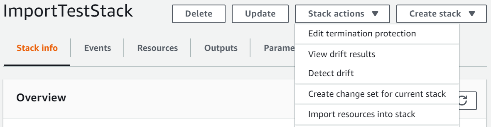

Die vorliegende Übersetzung wurde maschinell erstellt. Im Falle eines Konflikts oder eines Widerspruchs zwischen dieser übersetzten Fassung und der englischen Fassung (einschließlich infolge von Verzögerungen bei der Übersetzung) ist die englische Fassung maßgeblich.
Verschachteln eines vorhandenen Stacks
Verwenden Sie die resource import-Funktion, um einen vorhandenen Stack in einem anderen vorhandenen Stack zu verschachteln. Verschachtelte Stacks sind gängige Komponenten, die Sie in anderen Vorlagen deklarieren und referenzieren. Auf diese Weise können Sie das Kopieren und Einfügen derselben Konfigurationen in Ihre Vorlagen vermeiden und Stack-Aktualisierungen vereinfachen. Wenn Sie über eine Vorlage für eine gängige Komponente verfügen, können Sie die AWS::CloudFormation::Stack-Ressource verwenden, um aus einer anderen Vorlage auf diese Vorlage zu verweisen. Weitere Hinweise zu verschachtelten Stacks finden Sie unter Arbeiten mit verschachtelten Stacks.
AWS CloudFormation unterstützt nur eine Ebene der Verschachtelung mit resource import. Dies bedeutet, dass Sie keinen Stack in einen untergeordneten Stack importieren oder einen Stack importieren können, der untergeordnete Stacks enthält.
Validierung des Imports von verschachtelten Stacks
AWS CloudFormation führt während eines Importvorgangs für verschachtelte Stacks die folgenden Validierungen durch.
-
Die verschachtelte
AWS::CloudFormation::Stack-Definition in der übergeordneten Stack-Vorlage entspricht der tatsächlichen geschachtelten Stack-Vorlage. -
Die Tags für die verschachtelte
AWS::CloudFormation::Stack-Definition in der übergeordneten Stack-Vorlage entsprechen den Tags für die tatsächliche verschachtelte Stack-Ressource.
Verschachteln eines vorhandenen Stacks mithilfe der AWS Management Console
-
Fügen Sie die
AWS::CloudFormation::Stack-Ressource der übergeordneten Stack-Vorlage mit einerRetain-DeletionPolicy hinzu. Im folgenden Beispiel einer übergeordneten Vorlage istNestedStackdas Ziel des Imports.JSON
{ "AWSTemplateFormatVersion" : "2010-09-09", "Resources" : { "ServiceTable":{ "Type":"AWS::DynamoDB::Table", "Properties":{ "TableName":"Service", "AttributeDefinitions":[ { "AttributeName":"key", "AttributeType":"S" } ], "KeySchema":[ { "AttributeName":"key", "KeyType":"HASH" } ], "ProvisionedThroughput":{ "ReadCapacityUnits":5, "WriteCapacityUnits":1 } } }, "NestedStack" : { "Type" : "AWS::CloudFormation::Stack", "DeletionPolicy": "Retain", "Properties" : { "TemplateURL" : "https://s3.amazonaws.com/cloudformation-templates-us-east-2/EC2ChooseAMI.template", "Parameters" : { "InstanceType" : "t1.micro", "KeyName" : "mykey" } } } } }YAML
AWSTemplateFormatVersion: 2010-09-09 Resources: ServiceTable: Type: 'AWS::DynamoDB::Table' Properties: TableName: Service AttributeDefinitions: - AttributeName: key AttributeType: S KeySchema: - AttributeName: key KeyType: HASH ProvisionedThroughput: ReadCapacityUnits: 5 WriteCapacityUnits: 1 NestedStack: Type: 'AWS::CloudFormation::Stack' DeletionPolicy: Retain Properties: TemplateURL: >- https://s3.amazonaws.com/cloudformation-templates-us-east-2/EC2ChooseAMI.template Parameters: InstanceType: t1.micro KeyName: mykey -
Öffnen Sie die AWS CloudFormation-Konsole.
-
Wählen Sie auf der Seite Stacks mit ausgewähltem übergeordneten Stack Stack-Aktionen und dann Ressourcen in Stack importieren aus.
 -
Auf der Seite Importübersicht finden Sie eine Liste der Dinge, die Sie während dieses Vorgangs angeben müssen. Wählen Sie anschließend Weiter aus.
-
Geben Sie auf der Seite Vorlage angeben die aktualisierte übergeordnete Vorlage mit einer der folgenden Methoden an und wählen Sie dann Weiter aus.
-
Wählen Sie Amazon S3-URL aus und geben Sie dann die URL für Ihre Vorlage im Textfeld an.
-
Wählen Sie Vorlagendatei hochladen aus und suchen Sie dann nach Ihrer Vorlage.
-
-
Identifizieren Sie auf der Seite Ressourcen identifizieren die
AWS::CloudFormation::Stack-Ressource.-
Wählen Sie unter Bezeichnereigenschaft den Typ des Ressourcenbezeichners aus. Beispielsweise kann eine
AWS::CloudFormation::Stack-Ressource mit derStackId-Eigenschaft identifiziert werden. -
Geben Sie unter Bezeichnerwert den tatsächlichen Eigenschaftswert ein. Zum Beispiel
arn:aws:cloudformation:us-west-2:12345678910:stack/mystack/5b918d10-cd98-11ea-90d5-0a9cd3354c10
-
Wählen Sie Next (Weiter).
-
-
Ändern Sie auf der Seite Stack-Details angeben alle Parameter und wählen Sie dann Weiter aus. Dadurch wird automatisch ein Änderungssatz erstellt.
Wichtig
Der Importvorgang schlägt fehl, wenn Sie vorhandene Parameter ändern, die einen Erstellungs-, Aktualisierungs- oder Löschvorgang initiieren.
-
Überprüfen Sie auf der Seite
Stack-Nameüberprüfen, ob die richtige Ressource importiert wird, und wählen Sie dann Ressourcen importieren aus. Dadurch wird der im letzten Schritt erstellte Änderungssatz automatisch ausgeführt. Alle Tags auf Stack-Ebene werden zu diesem Zeitpunkt auf importierte Ressourcen angewendet. -
Der Bereich Ereignisse der Seite Stack-Details für Ihren übergeordneten Stack wird angezeigt.

Anmerkung
Es ist nicht erforderlich, die Abweichungserkennung für den übergeordneten Stack nach diesem Importvorgang auszuführen, da die
AWS::CloudFormation::Stack-Ressource bereits von AWS CloudFormation verwaltet wurde.
Verschachteln eines vorhandenen Stacks mithilfe der AWS CLI
-
Fügen Sie die
AWS::CloudFormation::Stack-Ressource der übergeordneten Stack-Vorlage mit einerRetain-DeletionPolicy hinzu. Im folgenden Beispiel einer übergeordneten Vorlage istNestedStackdas Ziel des Imports.JSON
{ "AWSTemplateFormatVersion" : "2010-09-09", "Resources" : { "ServiceTable":{ "Type":"AWS::DynamoDB::Table", "Properties":{ "TableName":"Service", "AttributeDefinitions":[ { "AttributeName":"key", "AttributeType":"S" } ], "KeySchema":[ { "AttributeName":"key", "KeyType":"HASH" } ], "ProvisionedThroughput":{ "ReadCapacityUnits":5, "WriteCapacityUnits":1 } } }, "NestedStack" : { "Type" : "AWS::CloudFormation::Stack", "DeletionPolicy": "Retain", "Properties" : { "TemplateURL" : "https://s3.amazonaws.com/cloudformation-templates-us-east-2/EC2ChooseAMI.template", "Parameters" : { "InstanceType" : "t1.micro", "KeyName" : "mykey" } } } } }YAML
AWSTemplateFormatVersion: 2010-09-09 Resources: ServiceTable: Type: 'AWS::DynamoDB::Table' Properties: TableName: Service AttributeDefinitions: - AttributeName: key AttributeType: S KeySchema: - AttributeName: key KeyType: HASH ProvisionedThroughput: ReadCapacityUnits: 5 WriteCapacityUnits: 1 NestedStack: Type: 'AWS::CloudFormation::Stack' DeletionPolicy: Retain Properties: TemplateURL: >- https://s3.amazonaws.com/cloudformation-templates-us-east-2/EC2ChooseAMI.template Parameters: InstanceType: t1.micro KeyName: mykey -
Erstellen Sie einen Änderungssatz vom Typ
IMPORTmit den folgenden Parametern.--resources-to-importunterstützt keine Inline-YAML.>aws cloudformation create-change-set --stack-nameTargetParentStack--change-set-nameImportChangeSet--change-set-typeIMPORT--resources-to-import "[{\"ResourceType\":\AWS::CloudFormation::Stack\",\"LogicalResourceId\":\"MyStack\",\"ResourceIdentifier\":{\"StackId\":\"arn:aws:cloudformation:us-east-2:123456789012:stack/mystack-mynestedstack-sggfrhxhum7w/f449b250-b969-11e0-a185-5081d0136786\"}}] --template-bodyfile://templateToImport.jsonDie AWS CLI unterstützt auch Textdateien als Eingabe für den
resources-to-import-Parameter, wie im folgenden Beispiel gezeigt.--resources-to-import:file://resourcesToImport.txtIn dieser Anleitung enthält
file://resourcesToImport.txtFolgendes.JSON
[ { "ResourceType":"AWS::CloudFormation::Stack", "LogicalResourceId":"MyStack", "ResourceIdentifier": { "StackId":"arn:aws:cloudformation:us-east-2:123456789012:stack/mystack-mynestedstack-sggfrhxhum7w/f449b250-b969-11e0-a185-5081d0136786" } } ]YAML
ResourceType: 'AWS::CloudFormation::Stack' LogicalResourceId: MyStack ResourceIdentifier: StackId: >- arn:aws:cloudformation:us-east-2:123456789012:stack/mystack-mynestedstack-sggfrhxhum7w/f449b250-b969-11e0-a185-5081d0136786 -
Überprüfen Sie den Änderungssatz, um sicherzustellen, dass der richtige Stack importiert wird.
>aws cloudformation describe-change-set --change-set-nameImportChangeSet -
Führen Sie den Änderungssatz aus, um den Stack in den übergeordneten Quell-Stack zu importieren. Alle Tags auf Stack-Ebene werden zu diesem Zeitpunkt auf importierte Ressourcen angewendet. Nach erfolgreichem Abschluss des Importvorgangs
(IMPORT_COMPLETE)ist der Stack erfolgreich verschachtelt.>aws cloudformation execute-change-set --change-set-nameImportChangeSetAnmerkung
Es ist nicht erforderlich, die Abweichungserkennung für den übergeordneten Stack nach diesem Importvorgang auszuführen, da die
AWS::CloudFormation::Stack-Ressource bereits von AWS CloudFormation verwaltet wurde.